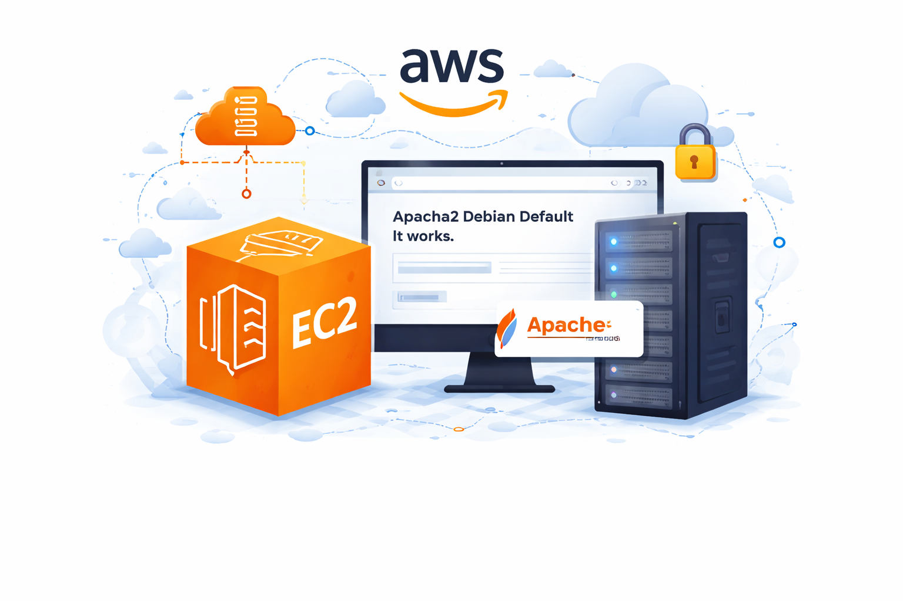

Contexte
Mise en situation d'un deploiement cloud simple pour heberger un service web sur une infrastructure AWS.
Projet 2
Ce projet met en pratique les bases du cloud AWS a travers le lancement d'une instance EC2, la configuration de la securite reseau et le deploiement d'un serveur Apache accessible depuis le web.

Objectif atteint
Serveur web deploye
Instance active, securisee et testee
Mise en situation d'un deploiement cloud simple pour heberger un service web sur une infrastructure AWS.
Rendre une page web disponible en ligne apres configuration du reseau, du systeme et du serveur Apache.
Une instance EC2 fonctionnelle, securisee avec des regles d'acces claires et un service web accessible.
Dans ce travail de groupe, nous avons deploye un environnement web sur Amazon EC2 afin de comprendre le cycle complet de mise en ligne d'un service dans le cloud. Le projet nous a permis de manipuler la creation d'instance, la connexion distante, la configuration systeme et l'ouverture des ports utiles.
Cette realisation montre notre capacite a passer d'une infrastructure vierge a une machine exploitable pour un usage web, tout en appliquant les bonnes pratiques de base en administration et en securite.
Deroulement
01
Choix de l'image, type d'instance, paire de cles et lancement de la machine sur AWS.
02
Configuration du security group pour autoriser SSH pour l'administration et HTTP pour l'acces public.
03
Connexion au serveur, mise a jour du systeme puis installation et demarrage du service web.
04
Test d'accessibilite via l'adresse publique de l'instance et validation du bon affichage de la page.
Ce projet nous a aide a relier la theorie a la pratique en comprenant comment rendre une application accessible, securisee et administrable dans un environnement cloud reel.
Le deploiement EC2 constitue une etape cle dans notre parcours : il montre notre capacite a preparer, exposer et verifier un service web dans le cloud.
Revenir a la liste des projets